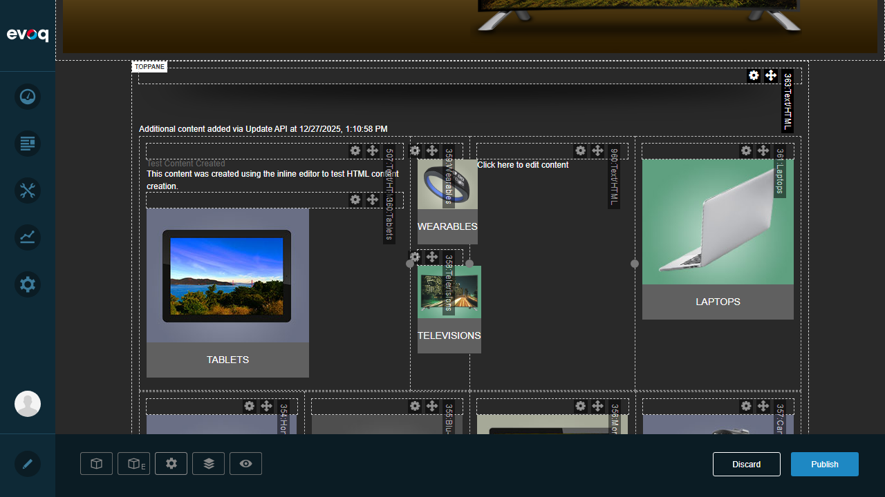

Test 1: Display Edit Controls in Edit Mode
PASSVerify that edit controls are displayed when the page is in Edit Mode. This includes pane labels, resize handles, action buttons, and the layout toolbar.
Steps Performed:
- Logged into DNN site as host user
- Navigated to home page
- Clicked "Edit" button in left sidebar to enter Edit Mode
- Verified ContentLayout panes are visible with labels (F30A_Pane1-4, 9977_Pane1-4)
- Confirmed resize handles appear on column borders
- Verified module action menus are accessible
Result: Edit controls are properly displayed. The .dnnEditState
CSS class is applied to the page body, enabling all edit-mode styles defined in
LayoutEditor.css. Pane labels, dashed borders, and resize handles are visible.

Edit mode showing ContentLayout panes with visible controls

ContentLayout panes with labels and dashed borders